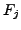
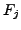

Next: The FHT Algorithm
Up: The Fast Hough Transform
Previous: The Fast Hough Transform
Contents
The following notation is taken from [7].
Hyperplanes are represented by the equations
where
is parameter space, rescaled so that
the initial ranges of each  are the same and centred around zero.
The initial ranges thus
form a hypercube (generalisation of a cube) in parameter space. Each
are the same and centred around zero.
The initial ranges thus
form a hypercube (generalisation of a cube) in parameter space. Each
 is a function of  normalised such that
.
is a function of  normalised such that
.
Philip McLauchlan
2009-01-27